Zadatak ove vježbe bio je napraviti vlastiti font u aplikaciji za izradu fonta. Slova se izrađuju vektorskim sustavom pen toolom. Bilo je potrebno ispisati vlastito puno ime, te izraditi posebne znakove hrvatskog jezika.
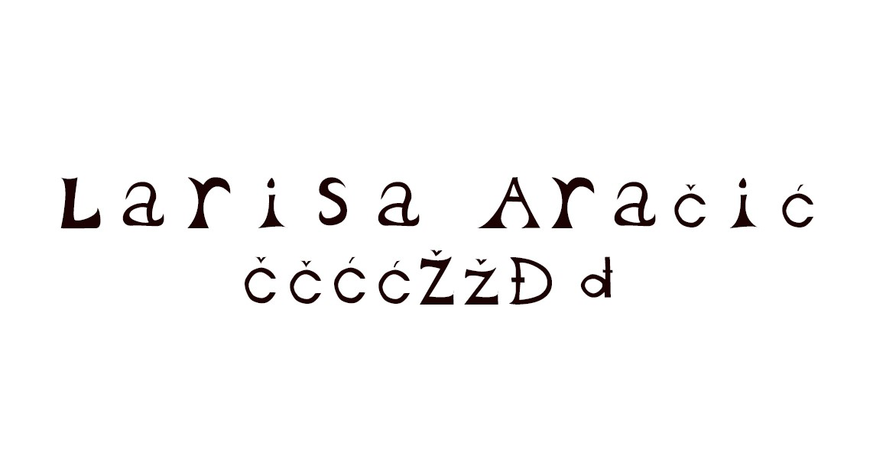Zadatak vježbe 2 bio je uklopiti bazierovu krivlju u font pomoću clipping maske. U drugom dijelu vježbe koristili smo se fontom prve vježbe kao podlogu za krivulju.
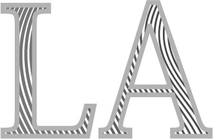 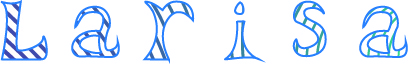U vježbi 3 također smo koristili pen tool, no sada smo kao glavni alat koristili refleksiju i rotaciju predmeta, kao i opacitet to jest prozirnost.
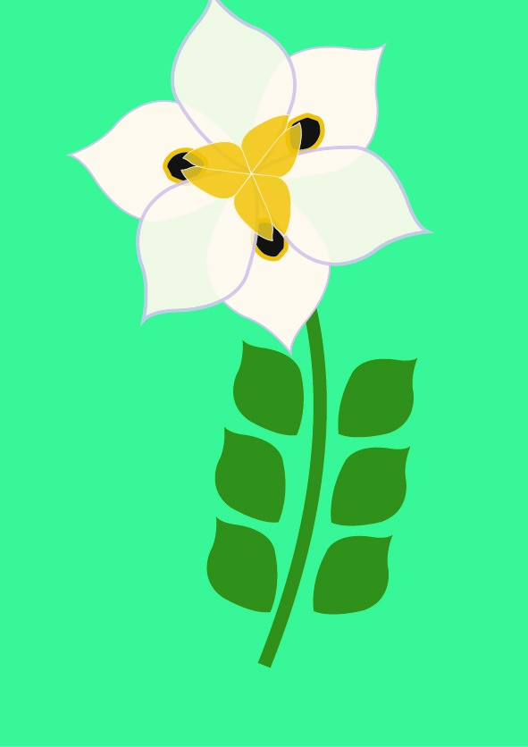 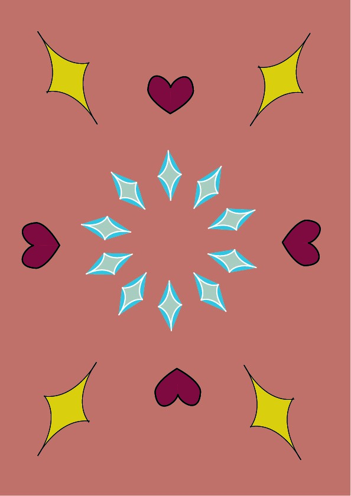U ovoj vježbi koristili smo se mesh toolom sa sjenčanje te izradu gradijenta. Koristili smo se i običnim gradijent toolom. Zadatak je bio uklopiti sve elemente ove i protekle vježbe.
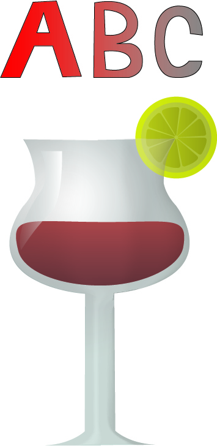 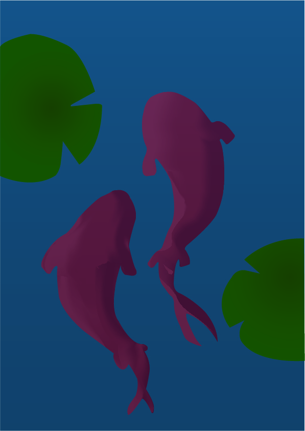U vježbi 5 počinjemo se koristiti rasterskim programom. Zadatak je bio ispraviti napravilnosti na pozadini, kopirati kosu, te ispraviti "nepravilnosti" na koži djevojaka.
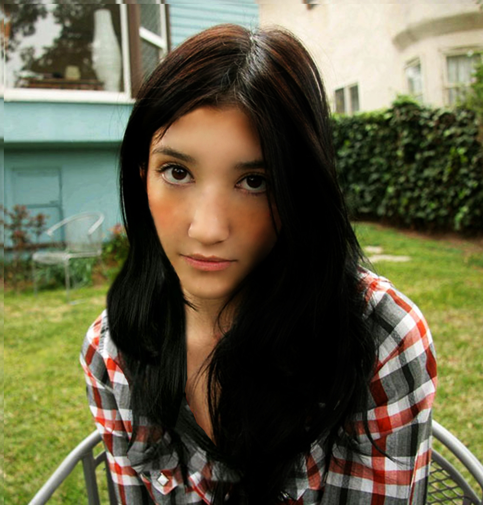 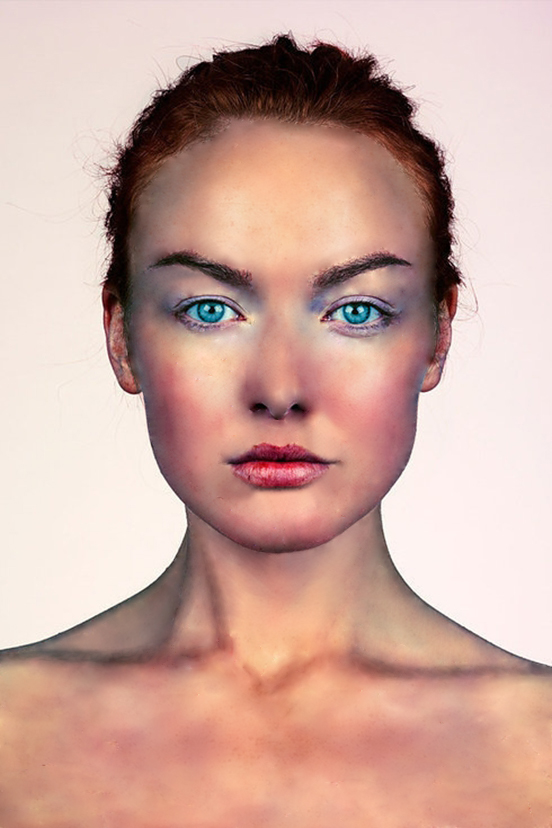U vježbi 6 radili smo obojenje pomoću kanala. Zadatak je bio realistično obojati fotografiju dječaka, te vlastitu crno bijelu fotografiju obojati u razne boje 5 puta.
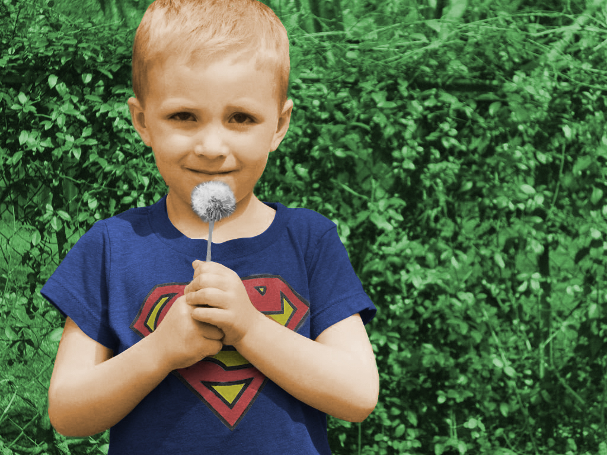
U ovoj vježbi bilo je potrebno izrezivati elemente s različitih fotografija te ih uklopiti u početnu pozadinsku fotografiju, te objektima dodati sjene.
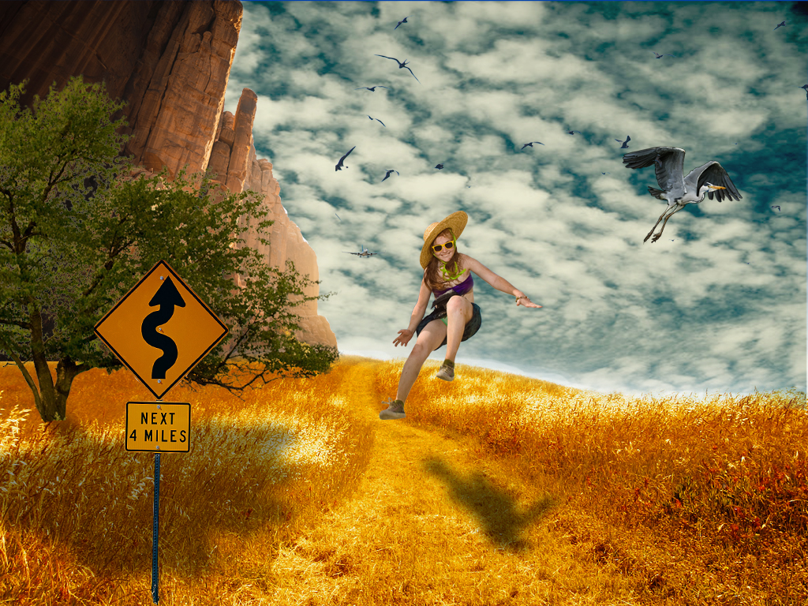U vježbi 8 izrađivali smo gifove, od kojih je jedan kinemagraf. Kako bi smo napravili kinemagraf morali smo izrezati video na sličnim dijelovima kako bi dobili dojam kako gif teče naprestano. Također smo s videa uklanjali zvuk.
 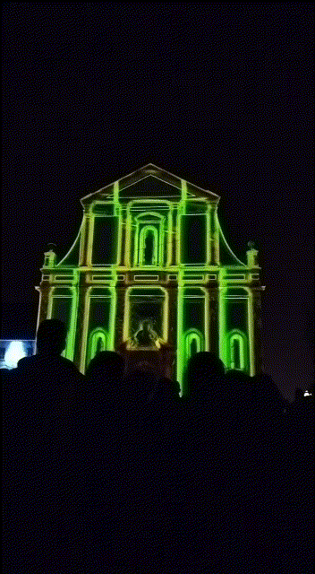
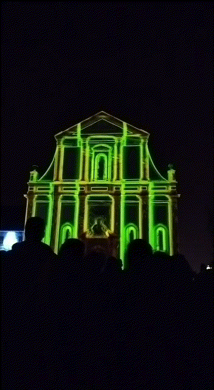
U ovoj vježbi uređivali smo te izrezivali zvuk. Na video smo dodavali efekte, statični, te pomični tekst.